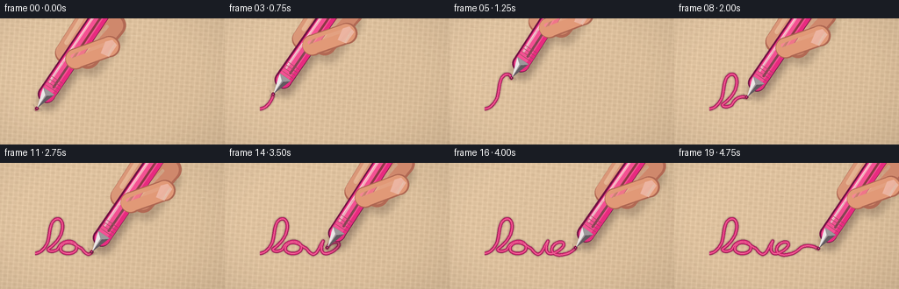
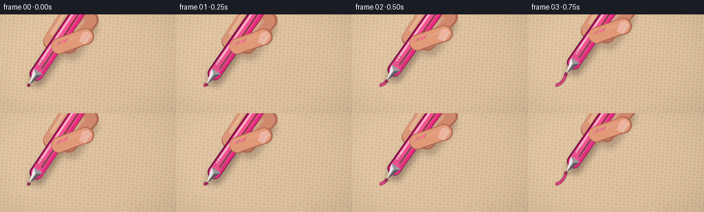

CODING AGENTS AS PIXEL WORLD MODELS
traex/GPT-5.6-Sol · mechanics_0048
点击播放 · 原生 RGB 像素
逐轮保存的候选
回放视频、检查图与代码变化。
每份候选均可单独播放。实际图片检查记录在下方工具轨迹中。
候选 01播放与检查图
点击播放 · 原生 RGB 像素


展开代码变化
--- 上一保存版本
+++ 本次保存版本
@@ -0,0 +1,296 @@
+from pathlib import Path
+import math
+
+import numpy as np
+from PIL import Image, ImageDraw, ImageFilter
+
+import artifact_io
+
+
+W, H, N = 256, 144, 20
+S = 3 # supersampling for smooth macro shapes
+WS, HS = W * S, H * S
+ROOT = Path(__file__).resolve().parent
+
+
+def rgba_layer():
+ return Image.new("RGBA", (WS, HS), (0, 0, 0, 0))
+
+
+def q(p):
+ return tuple(int(round(v * S)) for v in p)
+
+
+def poly(draw, pts, fill):
+ draw.polygon([q(p) for p in pts], fill=fill)
+
+
+def round_line(draw, pts, width, fill):
+ pts2 = [q(p) for p in pts]
+ ww = max(1, int(round(width * S)))
+ draw.line(pts2, fill=fill, width=ww, joint="curve")
+ r = ww // 2
+ for x, y in (pts2[0], pts2[-1]):
+ draw.ellipse((x-r, y-r, x+r, y+r), fill=fill)
+
+
+def cubic(a, b, c, d, count=18):
+ t = np.linspace(0.0, 1.0, count, endpoint=False)[:, None]
+ a, b, c, d = map(lambda x: np.asarray(x, np.float32), (a, b, c, d))
+ return (1-t)**3*a + 3*(1-t)**2*t*b + 3*(1-t)*t**2*c + t**3*d
+
+
+def make_writing_path():
+ # A single continuous, hand-written "love" gesture with a final flourish.
+ segs = [
+ ((40,103),(46,103),(51,97),(54,91)),
+ ((54,91),(57,82),(56,69),(62,65)),
+ ((62,65),(69,60),(73,69),(70,79)),
+ ((70,79),(68,88),(58,96),(55,98)),
+ ((55,98),(53,100),(60,103),(66,98)),
+ ((66,98),(70,88),(82,87),(86,93)),
+ ((86,93),(90,100),(82,105),(74,103)),
+ ((74,103),(66,101),(68,93),(75,91)),
+ ((75,91),(82,89),(89,96),(92,97)),
+ ((92,97),(95,99),(96,104),(101,104)),
+ ((101,104),(106,104),(109,92),(112,89)),
+ ((112,89),(110,94),(108,101),(113,103)),
+ ((113,103),(119,105),(130,97),(130,93)),
+ ((130,93),(130,88),(120,90),(117,96)),
+ ((117,96),(114,102),(121,107),(131,104)),
+ ((131,104),(138,103),(141,99),(145,96)),
+ ((145,96),(151,93),(158,94),(166,99)),
+ ]
+ points = np.vstack([cubic(*seg, count=15) for seg in segs] + [np.asarray([[166,99]], np.float32)])
+ # Re-sample at equal arc-length so the nib moves at a believable speed.
+ dd = np.linalg.norm(np.diff(points, axis=0), axis=1)
+ arc = np.r_[0, np.cumsum(dd)]
+ target = np.linspace(0, arc[-1], 520)
+ x = np.interp(target, arc, points[:,0])
+ y = np.interp(target, arc, points[:,1])
+ return np.c_[x, y]
+
+
+PATH = make_writing_path()
+
+
+def make_fabric():
+ rng = np.random.default_rng(48291)
+ yy, xx = np.mgrid[0:HS, 0:WS].astype(np.float32) / S
+ # The weave is slightly skewed, preventing the background from looking like a grid.
+ ang = math.radians(4.0)
+ xr = xx*math.cos(ang) + yy*math.sin(ang)
+ yr = -xx*math.sin(ang) + yy*math.cos(ang)
+ warp = np.cos(2*math.pi*xr/5.8)
+ weft = np.cos(2*math.pi*yr/4.65)
+ warp_ridge = np.maximum(warp, 0.0) ** 5
+ weft_ridge = np.maximum(weft, 0.0) ** 6
+ trough = -0.62*(np.minimum(warp, 0.0)**2) - 0.52*(np.minimum(weft, 0.0)**2)
+ crossing = np.sin(2*math.pi*xr/11.6) * np.sin(2*math.pi*yr/9.3)
+ noise = rng.normal(0, 1, (HS, WS)).astype(np.float32)
+ # Low frequency irregularity in the cloth's dye and height.
+ low = np.asarray(Image.fromarray(((noise-noise.min())/(noise.max()-noise.min())*255).astype(np.uint8))
+ .resize((max(1,WS//18), max(1,HS//18)), Image.Resampling.BILINEAR)
+ .resize((WS,HS), Image.Resampling.BICUBIC), np.float32) / 255 - .5
+ light = 9.2*warp_ridge + 8.0*weft_ridge + 3.0*crossing + 5.2*trough + 9*low + 1.65*noise
+ # Warm undyed linen, lit from upper-left.
+ illumination = 7.0*(1-xx/W) + 4.0*(1-yy/H)
+ base = np.zeros((HS,WS,3), np.float32)
+ base[:,:,:] = np.array([211,185,151], np.float32)
+ base += light[:,:,None] + illumination[:,:,None]
+ base[:,:,0] += 2.5
+ base[:,:,2] -= 1.0
+ image = Image.fromarray(np.clip(base,0,255).astype(np.uint8), "RGB").convert("RGBA")
+
+ # Loose, discontinuous fibers and small slubs sell the rough tactile surface.
+ detail = rgba_layer()
+ d = ImageDraw.Draw(detail, "RGBA")
+ for _ in range(270):
+ x = rng.uniform(-8, W+8); y = rng.uniform(0,H)
+ horizontal = rng.random() < .55
+ length = rng.uniform(1.2, 8.5)
+ if horizontal:
+ p2 = (x+length, y+rng.normal(.25,.28))
+ else:
+ p2 = (x+rng.normal(.15,.20), y+length*.7)
+ shade = rng.choice([-1,1])
+ col = (94,70,50,int(rng.uniform(12,30))) if shade < 0 else (255,245,220,int(rng.uniform(14,36)))
+ d.line([q((x,y)), q(p2)], fill=col, width=max(1,int(rng.uniform(.25,.65)*S)))
+ for _ in range(32):
+ x = rng.uniform(0,W); y=rng.uniform(2,H-2); length=rng.uniform(3,13)
+ d.line([q((x,y)),q((x+length,y+rng.uniform(-.6,.6)))], fill=(98,72,47,35), width=max(1,int(.6*S)))
+ d.line([q((x,y-.45)),q((x+length,y-.15))], fill=(255,241,211,32), width=1*S)
+ image = Image.alpha_composite(image, detail)
+
+ # Gentle macro-lens vignette.
+ y0, x0 = np.mgrid[0:HS,0:WS]
+ dx=(x0-WS*.48)/(WS*.67); dy=(y0-HS*.47)/(HS*.78)
+ vig=np.clip((dx*dx+dy*dy-.34)*23,0,18).astype(np.uint8)
+ v=np.zeros((HS,WS,4),np.uint8); v[:,:,3]=vig
+ return Image.alpha_composite(image, Image.fromarray(v,"RGBA"))
+
+
+FABRIC = make_fabric()
+
+
+def prefix_for_fraction(fraction):
+ pos = fraction * (len(PATH)-1)
+ k = int(pos)
+ part = PATH[:k+1].copy()
+ if k < len(PATH)-1:
+ p = PATH[k]*(1-(pos-k)) + PATH[k+1]*(pos-k)
+ part = np.vstack([part,p])
+ return part
+
+
+def draw_ink(prefix, frame_no):
+ layer = rgba_layer()
+ d = ImageDraw.Draw(layer, "RGBA")
+ pts = [q(p) for p in prefix]
+ if len(pts) > 1:
+ # Soft absorbed halo, deep edge, then wet gel highlight.
+ halo = rgba_layer(); hd=ImageDraw.Draw(halo,"RGBA")
+ hd.line(pts, fill=(122,7,66,92), width=int(5.3*S), joint="curve")
+ halo = halo.filter(ImageFilter.GaussianBlur(.75*S))
+ layer = Image.alpha_composite(layer, halo)
+ d = ImageDraw.Draw(layer,"RGBA")
+ d.line(pts, fill=(145,10,75,220), width=int(4.0*S), joint="curve")
+ d.line(pts, fill=(225,26,119,235), width=int(2.45*S), joint="curve")
+ d.line(pts, fill=(255,81,157,150), width=max(1,int(.72*S)), joint="curve")
+
+ # Tiny sideways catches on raised warp fibers make the mark visibly frictional.
+ rng=np.random.default_rng(1700)
+ indices=np.arange(6,len(prefix)-2,12)
+ for j in indices:
+ if rng.random() < .72:
+ p=prefix[j]; tangent=prefix[min(j+2,len(prefix)-1)]-prefix[max(0,j-2)]
+ tangent=tangent/(np.linalg.norm(tangent)+1e-6)
+ n=np.array([-tangent[1],tangent[0]])
+ off=rng.uniform(-2.2,2.2)
+ a=p+n*off; b=a+tangent*rng.uniform(.5,2.1)
+ d.line([q(a),q(b)], fill=(183,14,91,int(rng.uniform(90,175))), width=max(1,int(.52*S)))
+ # Saturated pressure spot beneath the rolling ball.
+ p=prefix[-1]; rr=2.05
+ d.ellipse((int((p[0]-rr)*S),int((p[1]-rr)*S),int((p[0]+rr)*S),int((p[1]+rr)*S)), fill=(177,9,83,230))
+ return layer
+
+
+def pen_geometry(p, frame_no):
+ # Hand keeps a mainly fixed writing angle, with a tiny rough-surface wobble.
+ theta=math.radians(-56.0 + 1.25*math.sin(frame_no*.83))
+ u=np.array([math.cos(theta), math.sin(theta)],np.float32)
+ n=np.array([-u[1],u[0]],np.float32)
+ return u,n
+
+
+def draw_indent(canvas, p, u, n, frame_no):
+ # Contact shadow and two displaced fibers immediately around the nib.
+ lay=rgba_layer(); d=ImageDraw.Draw(lay,"RGBA")
+ pp=p+np.array([.8,1.5])
+ d.ellipse((int((pp[0]-5.0)*S),int((pp[1]-2.1)*S),int((pp[0]+5.0)*S),int((pp[1]+2.1)*S)), fill=(69,41,30,38))
+ d.line([q(p+n*3.1-u*1.0),q(p+n*5.8+u*1.3)],fill=(255,237,206,108),width=1*S)
+ d.line([q(p-n*3.4-u*.5),q(p-n*5.6+u*1.5)],fill=(101,73,52,70),width=1*S)
+ lay=lay.filter(ImageFilter.GaussianBlur(.38*S))
+ return Image.alpha_composite(canvas,lay)
+
+
+def draw_hand_and_pen(canvas, p, frame_no):
+ u,n=pen_geometry(p,frame_no)
+ g=p+u*79
+
+ # Unified soft cast shadow from hand and pen onto the cloth.
+ shadow=rgba_layer(); sd=ImageDraw.Draw(shadow,"RGBA")
+ sh=np.array([3.2,4.6])
+ round_line(sd,[p+u*17+sh,p+u*167+sh],22,(49,25,29,92))
+ round_line(sd,[g-n*7+sh,g+u*58-n*9+sh],26,(58,36,28,72))
+ round_line(sd,[g+n*17+sh,g+u*40+n*19+sh],28,(58,36,28,62))
+ shadow=shadow.filter(ImageFilter.GaussianBlur(4.0*S))
+ canvas=Image.alpha_composite(canvas,shadow)
+
+ # Fingers behind the barrel.
+ hand=rgba_layer(); hd=ImageDraw.Draw(hand,"RGBA")
+ skin=(218,151,120,255); edge=(178,105,84,255); hi=(242,184,150,190)
+ round_line(hd,[g-u*8-n*8,g+u*61-n*10],25,edge)
+ round_line(hd,[g-u*7-n*9,g+u*60-n*11],22,skin)
+ round_line(hd,[g+u*2+n*15,g+u*49+n*20],27,edge)
+ round_line(hd,[g+u*3+n*14,g+u*48+n*19],23,(207,136,108,255))
+ round_line(hd,[g+u*2-n*14,g+u*51-n*16],5,hi)
+ round_line(hd,[g+u*7+n*9,g+u*43+n*14],4,(239,175,143,120))
+ canvas=Image.alpha_composite(canvas,hand)
+
+ # Pen barrel: darker translucent edges, pink body, ink tube, specular stripe.
+ pen=rgba_layer(); pd=ImageDraw.Draw(pen,"RGBA")
+ barrel_a=p+u*20; barrel_b=p+u*174
+ round_line(pd,[barrel_a,barrel_b],20,(112,17,67,255))
+ round_line(pd,[barrel_a+n*.6,barrel_b+n*.6],17.5,(232,42,127,255))
+ round_line(pd,[barrel_a-n*1.2,barrel_b-n*1.2],12.4,(246,77,148,245))
+ # Reservoir visible inside the translucent pink plastic.
+ round_line(pd,[p+u*31+n*2.1,p+u*163+n*2.1],3.0,(107,8,56,130))
+ round_line(pd,[p+u*33-n*4.8,p+u*158-n*4.8],2.25,(255,178,207,190))
+ round_line(pd,[p+u*37-n*6.0,p+u*125-n*6.0],.75,(255,239,245,210))
+ # Ribbed grip near the cone.
+ for dist in (24,28,32,36,40):
+ c=p+u*dist
+ pd.line([q(c-n*8.1),q(c+n*8.1)],fill=(150,18,78,130),width=max(1,int(.75*S)))
+
+ # Silver conical tip and dark rolling-ball point.
+ poly(pd,[p+u*.9,p+u*18-n*5.7,p+u*24-n*7.4,p+u*24+n*7.4,p+u*18+n*5.7],(154,151,154,255))
+ poly(pd,[p+u*.9,p+u*18-n*5.7,p+u*23-n*7.0,p+u*18-n*1.0],(235,231,232,255))
+ poly(pd,[p+u*.9,p+u*18+n*5.7,p+u*23+n*7.0,p+u*18+n*1.0],(94,87,94,255))
+ pd.line([q(p+u*3-n*.7),q(p+u*18-n*1.3)],fill=(255,255,255,170),width=max(1,int(.65*S)))
+ ball=p+u*.15
+ rr=1.45
+ pd.ellipse((int((ball[0]-rr)*S),int((ball[1]-rr)*S),int((ball[0]+rr)*S),int((ball[1]+rr)*S)),fill=(74,34,53,255))
+ rr=.65
+ pd.ellipse((int((ball[0]-rr)*S),int((ball[1]-rr)*S),int((ball[0]+rr)*S),int((ball[1]+rr)*S)),fill=(245,42,134,255))
+ canvas=Image.alpha_composite(canvas,pen)
+
+ # Thumb crosses in front of the pen at the grip point.
+ thumb=rgba_layer(); td=ImageDraw.Draw(thumb,"RGBA")
+ ta=g+u*26+n*29; tb=g-u*7+n*5
+ round_line(td,[ta,tb],24,(174,103,82,255))
+ round_line(td,[ta-u*.5-n*.7,tb-u*.5-n*.7],21.2,(225,153,119,255))
+ round_line(td,[ta-n*5,tb-n*5],4.0,(245,184,148,135))
+ # Small polished nail at the visible thumb end.
+ c=ta-u*2-n*1
+ poly(td,[c+u*8+n*7,c-u*8+n*7,c-u*10-n*3,c+u*4-n*6,c+u*10-n*1],(239,184,165,235))
+ round_line(td,[c-u*7+n*5,c+u*7+n*4],1.0,(255,221,206,150))
+ canvas=Image.alpha_composite(canvas,thumb)
+ return canvas,u,n
+
+
+def render_frame(i):
+ # Slight easing at beginning/end, while retaining steady pen travel in the middle.
+ t=i/(N-1)
+ eased=t*t*(3-2*t)
+ fraction=.006 + .988*eased
+ prefix=prefix_for_fraction(fraction)
+ p=prefix[-1].copy()
+ # Subpixel vertical vibration as the ball crosses coarse yarn ridges.
+ p[1] += .28*math.sin(i*2.21)
+ prefix[-1]=p
+
+ canvas=FABRIC.copy()
+ canvas=Image.alpha_composite(canvas,draw_ink(prefix,i))
+ u,n=pen_geometry(p,i)
+ canvas=draw_indent(canvas,p,u,n,i)
+ canvas,_,_=draw_hand_and_pen(canvas,p,i)
+
+ # Warm highlight around the point of action, subtle enough to preserve fibers.
+ glow=np.zeros((HS,WS,4),np.uint8)
+ gy,gx=np.mgrid[0:HS,0:WS]
+ dist=((gx/S-p[0])/38)**2+((gy/S-p[1])/28)**2
+ glow[:,:,0:3]=np.array([255,226,205],np.uint8)
+ glow[:,:,3]=(np.exp(-dist)*7).astype(np.uint8)
+ canvas=Image.alpha_composite(canvas,Image.fromarray(glow,"RGBA"))
+ return np.asarray(canvas.convert("RGB").resize((W,H),Image.Resampling.LANCZOS),np.uint8)
+
+
+def main():
+ frames=np.stack([render_frame(i) for i in range(N)],axis=0)
+ artifact_io.save(frames,ROOT)
+ print(f"saved {frames.shape} {frames.dtype}; dynamic range {frames.min()}..{frames.max()}")
+
+
+if __name__ == "__main__":
+ main()
可观测工具轨迹
实际执行的命令与返回图片。
命令 1exit 0
/bin/bash -lc "cat prompt.txt && printf '\\n--- GENERATION_RULES.md ---\\n' && cat GENERATION_RULES.md"
命令 2exit 0
/bin/bash -lc "cat task_spec.json && printf '\\n--- FILES ---\\n' && find . -maxdepth 2 -type f -printf '%p %s bytes\\n' | sort"
命令 3exit 0
/bin/bash -lc "command -v ffmpeg; command -v blender; command -v python3; python3 - <<'PY' mods=['numpy','PIL','cv2','matplotlib','imageio'] for m in mods: try: x=__import__(m); print(m,'OK',getattr(x,'__version__','')) except Exception as e: print(m,'NO',e) PY"
命令 4exit 0
/bin/bash -lc 'cat artifact_io.py'
命令 5exit 0
/bin/bash -lc 'python3 generate.py'
命令 6exit 0
/bin/bash -lc "ls -lh pixels.npz index.html inspection.png transition_check.png generate.py frames/*.png | tail -n 25 && python3 - <<'PY'
import numpy as np, json
z=np.load('pixels.npz')['pixels']
s=json.load(open('task_spec.json'))
print('packed tensor:',z.shape,z.dtype)
print('spec:',s)
print('unique packed colors:',len(np.unique(z)))
PY"命令 7exit 0
/bin/bash -lc "python3 - <<'PY'
import numpy as np
from PIL import Image
from pathlib import Path
f=[]
for p in sorted(Path('frames').glob('*.png')):
a=np.asarray(Image.open(p)); f.append(a)
f=np.stack(f)
print('frames',f.shape,f.dtype)
print('rgb extrema',[(int(f[...,c].min()),int(f[...,c].max())) for c in range(3)])
d=np.abs(np.diff(f.astype(np.int16),axis=0))
print('adjacent mean abs diff',np.round(d.mean((1,2,3)),2).tolist())
print('changed pixel fraction',np.round((np.max(d,axis=3)>4).mean((1,2)),3).tolist())
# rough semantic color masks: pink pen/ink and linen
pink=(f[...,0]>130)&(f[...,0]>f[...,1]*1.35)&(f[...,2]>f[...,1]*1.15)
print('pink fractions',np.round(pink.mean((1,2)),3).tolist())
assert f.shape==(20,144,256,3) and f.dtype==np.uint8
assert np.all(d.mean((1,2,3))>0.4)
assert pink.mean()>0.015
print('VALIDATION OK')
PY"保存候选 1 份；完成命令 7 次；可验证图片返回 0 张。原始 API 响应与完整日志保留在本地。